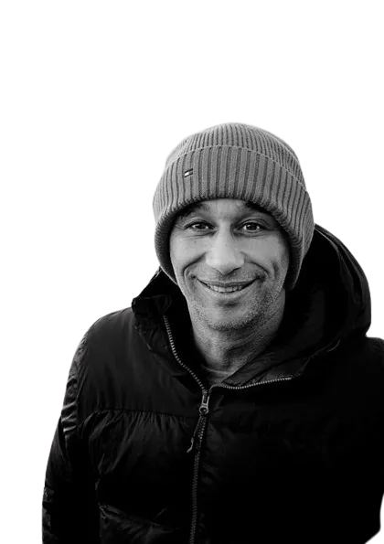
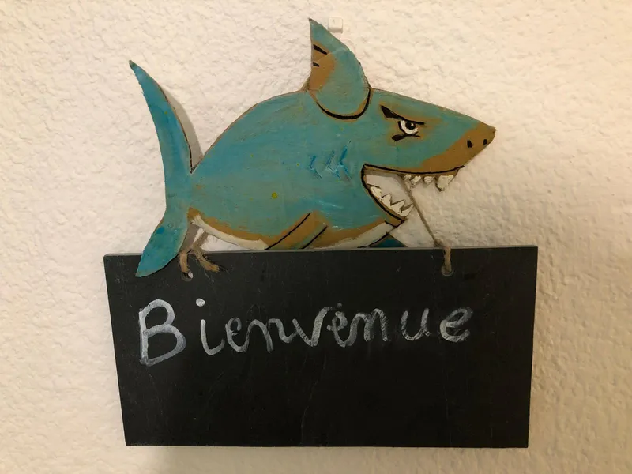

Coaching de vie
Clarifier vos objectifs, prendre conscience de vos ressources, renforcer votre confiance et votre efficacité.
150 €1 séance · 1 h

GREGORY ORTIZ
Faites le premier pas vers votre transformation. Plongez avec moi dans cette aventure où, ensemble, nous explorerons vos profondeurs pour révéler votre potentiel.
Prendre une inspiration… et plonger ↓−12 m · Je vous parle de moi
Ancien champion de pêche sous-marine et apnéiste confirmé, j’allie mes deux amours : l’océan et l’accompagnement humain. Sous l’eau, chaque respiration compte. En séance, chaque mot a son importance.



Né au cœur des Alpes, je lis Homo Delphinus de Jacques Mayol avant même Le Grand Bleu.
Je me distingue en compétition de pêche sous-marine.
Plus jeune moniteur de la discipline en France.
J’enseigne l’apnée dans une piscine d’altitude, entouré de neige.
Pêcheur professionnel en apnée, pêche sélective. J’initie des enfants malades à l’apnée.
−30 m · Je vous accompagne
Un engagement total, à 100 % présent pour vous, séance après séance.[ texte à valider ]
Des outils ajustés en continu selon vos résultats, et des exercices concrets entre les séances.[ texte à valider ]
Une écoute sans jugement, qui met à l’aise et permet d’aller là où ça bloque.[ texte à valider ]
−45 m · Une minute avec moi
Trois cycles guidés, moins d’une minute. Ce que l’on travaille en coaching respiration commence ici.
−62 m · Les programmes
Clarifier vos objectifs, prendre conscience de vos ressources, renforcer votre confiance et votre efficacité.
Un coaching ancré dans le réel pour reprendre le contrôle émotionnel. Idéal face au stress.
Boxe, Ironman et autres disciplines : un accompagnement personnalisé vers vos objectifs.
Capacité pulmonaire, endurance et sécurité en plongée libre.
Tous niveaux : progresser techniquement et gagner en sécurité en mer.
Plonger plus profond, en toute sécurité.
Les bonnes pratiques sous l’eau pour éviter les risques de la plongée.
−85 m · Ils en parlent
« Greg m’a d’abord aidé à démêler le nœud de difficultés qui me paralysait. Après chaque échange, je me sentais soulagé et en confiance. »
Léo P.
« J’ai pris conscience que je ne respirais pas. Par les exercices qu’il m’a conseillés, j’ai repris vie. Ces 3 mois ont changé ma façon de vivre. »
Laure
« Une écoute exceptionnellement attentive, sans jugement. Je me suis sentie comprise comme jamais auparavant. »
Stéphanie
−100 m · Le fond
Réservez un premier appel avec moi. Un échange sans engagement, pour comprendre où vous en êtes et ce que vous cherchez.